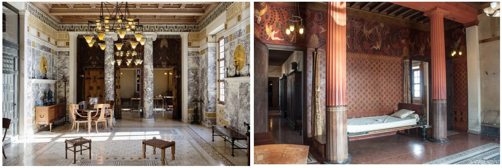
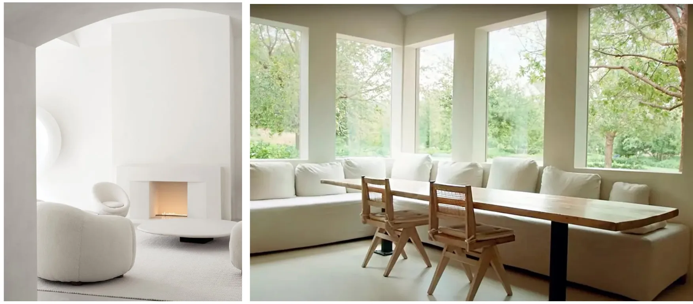
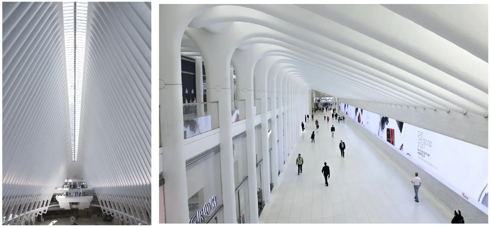
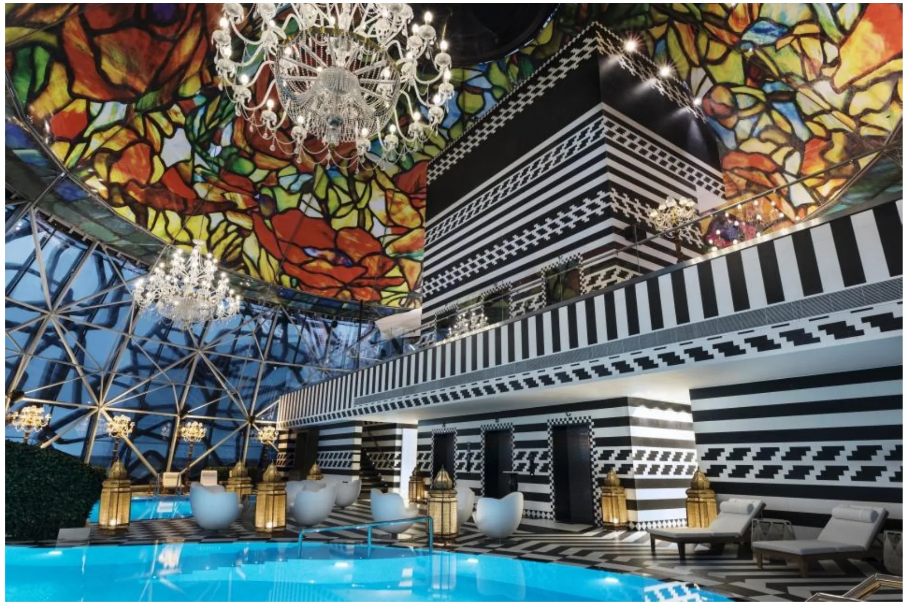
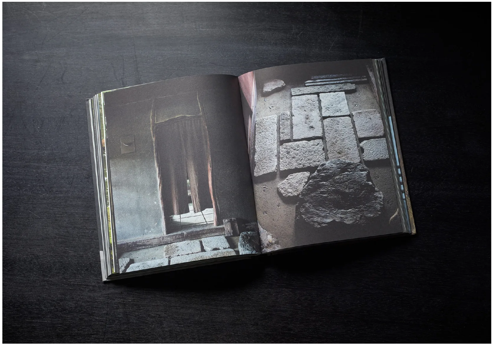
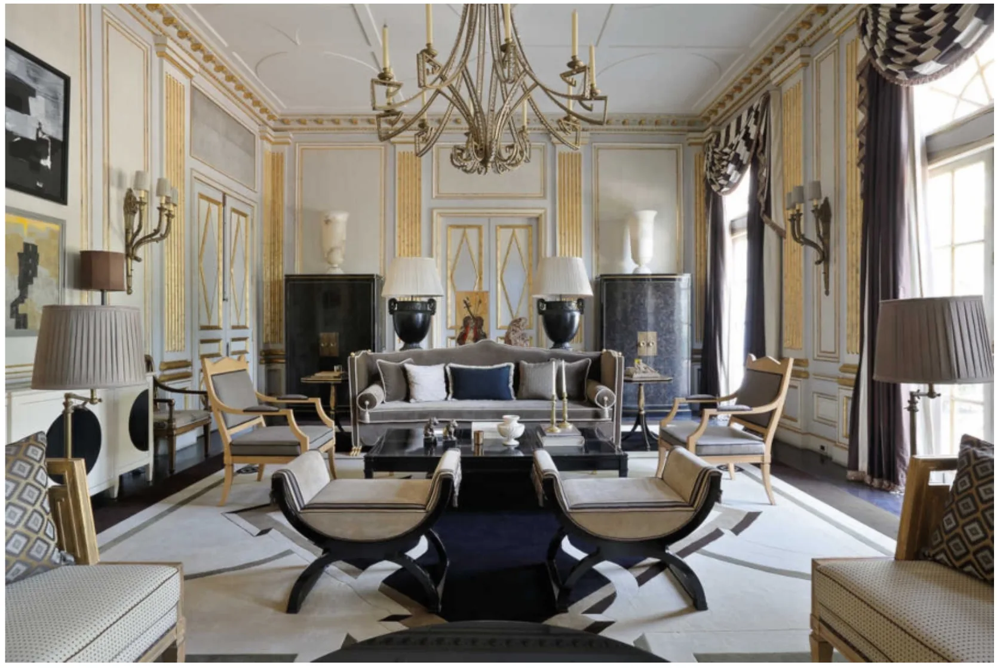
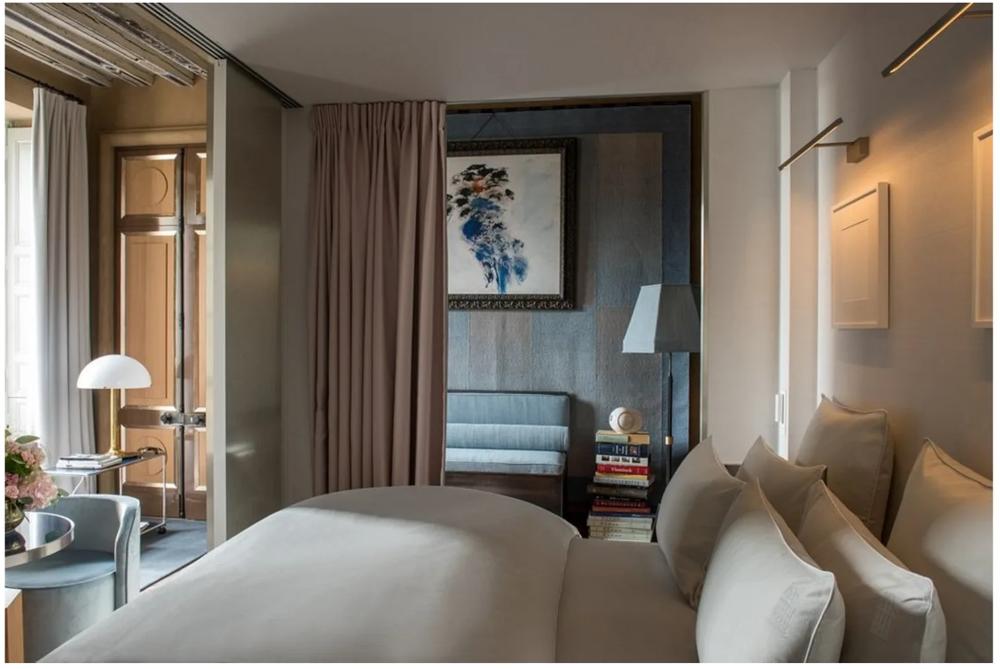
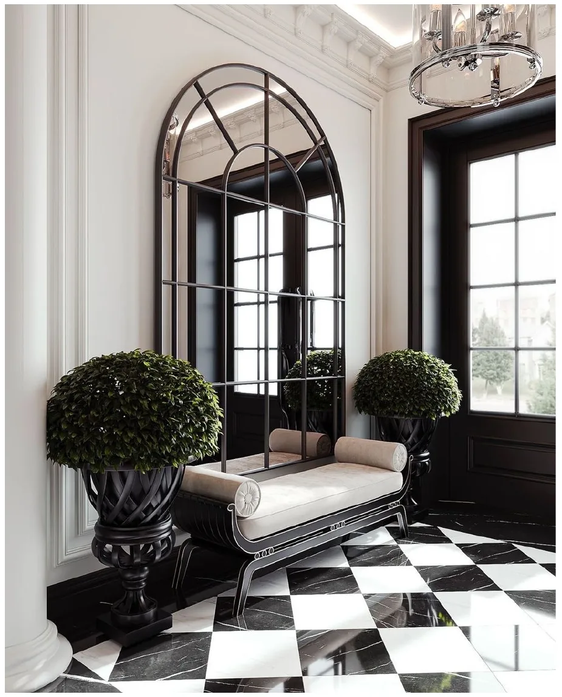
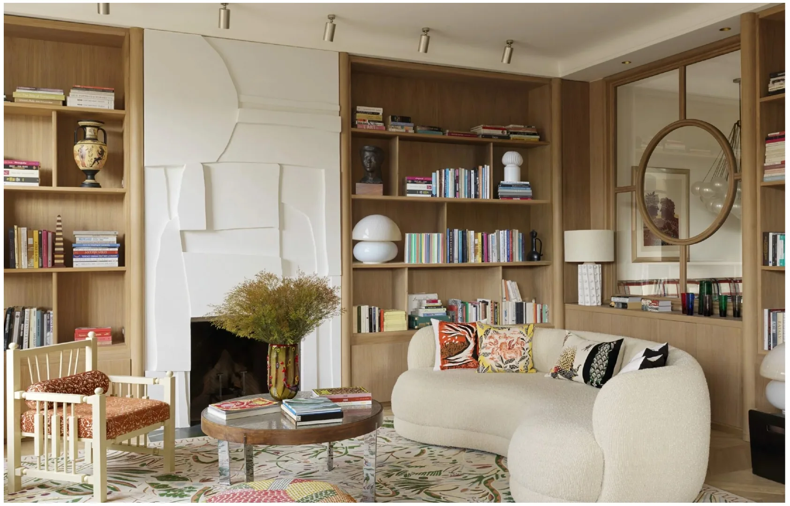
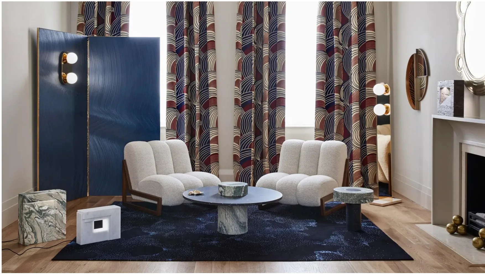

Рассказ-показ
Часть первая · Стили · Прошлое открывает будущее
СТИЛИ
И ТРЕНДЫ
Зачем понимать стили,
если современность
не требует канонов?
- Формат — каждый лист лекции разобран прозой, с фотографиями и словами автора; читается с телефона.
- Время — около часа на чтение и ещё полчаса на практику.
- После — вы читаете незнакомый интерьер по семи осям и называете его философию одной фразой: с неё начинается бриф.
«АТМОСФЕРА = ИДЕОЛОГИЯ/ФИЛОСОФИЯ/ЦЕННОСТИ ЖИЗНИ»
- 7 стилей
- 7 осей анализа
- 19 понятий
- упражнение · 11 проверок
Запись — 1:21:24
Глава 1 · 00:00–08:30 Камертон
«Речь пойдет не об этом. Речь пойдет о, наверное, самом важном, о философии, через которую можно сегодня создавать нечто оригинальное.»
Два интерьера, с которых лекция начинается без объяснений: библиотека Лауры Гонзалес и салон Humbert & Poyet. К ним страница возвращается в самопроверке — прочитать по осям, когда оси уже в руках.
00:11 — 08:30

СТИЛИ & ТРЕНДЫ
GLIF
Титул
Прошлое открывает будущееКолонный зал с современным стеллажом
«Мы сегодня можем обратиться к стилям, возможно, не всегда останавливаясь на визуальных паттернах.»
00:11 — 02:12


Камертон · библиотека
Лаура ГонзалесБиблиотека: белый скульптурный камин и округлый белый диван
«Чем больше мы проваливаемся в это чтение, погружаемся в эти элементы, тем интереснее нам находиться в этом интерьере.»
02:12 — 05:36


Камертон · салон
Humbert & PoyetСиняя ширма, шторы с паттерном, белые кресла, мрамор
«Мы видим вроде бы классический элемент ширмы, но уже очищенный от излишества, и более того, здесь ширма многофункциональна.»
05:36 — 08:30
Глава 2 · 08:30–23:27 Понятия
«Мы создаем атмосферу.»
Зачем понимать элементы стилей, если современность не требует канонов?
Ответ листа 7 — атмосфера. Стиль здесь не набор визуальных признаков, которым учат на курсах истории дизайна, а идеология, философия и ценности жизни, воплощённые в пространстве. Дальше каждая глава берёт одну эпоху и спрашивает, во что она верила и как это видно в интерьере сегодня.
08:30 — 23:27

АРХИТЕКТУРНЫЙ СТИЛЬ (ПО ОКСФОРДСКОМУ СЛОВАРЮ)
Определение: тип здания с фиксированными признаками конструкций и визуальных элементов
Составные компоненты (или как опознать стиль): -Форма и геометрия здания -Строительные материалы -Тип декора (узоры, форма окон, наличие или отсутствие колонн) Параметры классификации: Время: Привязка к исторической эпохе Место: Привязка к географической территории.
В академической традиции (Вёльфлин, Панофский, Грабар) статус «Большого стиля» присваивается художественным системам, обладающим тотальным охватом всех видов пространственных искусств, единой идеологической программой и, что критически важно, собственной конструктивной (тектонической) логикой.
Понятия · определение
Что такое стиль«Стиль – это тогда, когда устраиваются паттерны формообразования, морфология в течение довольно большого времени, иногда в течение даже столетий.»
08:30 — 13:49


1. Античная ордерная система (Древняя Греция и Древний Рим)
·
Хронологический интервал : VIII в. до н.э. — V в. н.э.
2. Романский стиль
Хронологический интервал : X — XII вв.
3. Готика
·
Хронологический интервал : Середина XII — XV/XVI вв.
4. Ренессанс (Возрождение)
·
Хронологический интервал : XV — начало XVII вв.
5. Барокко (включая, противоречивую фазу рококо)
6. Классицизм (вклю чая поздню ю фазу — Ампир)
Хронологический интервал : XVII — начало XIX вв.
Понятия · шесть систем
Большие стили«Но есть и такое мнение у историков о стиле, что рококо – это такая противоречивая фаза барокко»
13:49 — 17:10


Интерьерны й стиль Определение:
·
Устойчивая система визуальных, конструктивных и планировочных признаков внутри замкнутого архитектурного объема.
·
Составны е компоненты (идентификацион ны е маркеры ):
·
Колористическая схема (количественное соотношение площадей цвета).
!
·
·
!
Спецификация отделочных материалов поверхностей.
·
·
Морфология мебельных изделий (геометрия, пропорции, текстура).
!
·
·
!
Схема распределения источников освещения.
·
Параметры формирования :
·
Утилитарность : Первичная зависимость визуальных характеристик от параметров эргономики и физиологических потребностей пользователя.
!
·
·
Масштабирование: Компрессия элементов макро-стилей (архитектурных или исторических) до габаритов изолированного помещения.
!
Жозеф Диран
Индия Модави
·
Специфические характеристики (в сравнении с архитектурой):
·
Жизненный цикл физического воплощения интерьерного стиля статистически короче жизненного цикла здания.
!
·
Понятия · маркеры
Интерьерные стили«Это то, что отделяет интерьерный стиль от стиля художественного, стиля изящных искусств, утилитарная позиция.»
17:10 — 22:40
ЗАЧЕМ НАМ ПОНИМАТЬ ЭЛЕМЕНТЫ СТИЛЕЙ,
ЕСЛИ СОВРЕМЕННОСТЬ НЕ ТРЕБУЕТ КАНОНОВ?
!
Понятия · ключ лекции
Атмосфера«АТМОСФЕРА = ИДЕОЛОГИЯ/ФИЛОСОФИЯ/ЦЕННОСТИ ЖИЗНИ»
22:40 — 23:27
Глава 3 · 23:27–35:41 Античность
«Главное в античности – человек.»
Во что верила античность: мир как идеальный порядок, где всё на своём месте, а мера всему — человек.
Космос против хаоса; у Рима к порядку добавляется польза. Сегодня этот порядок читается у Понтремоли на вилле Керилос и у Лагерфельда, который делает из ордера мебель.
23:27 — 35:42


АНТИЧНОСТЬ
Главное- человек. Человек как модуль
Антихаос - порядок как признак гармонии
В Древнем Риме акцент на утилитаризм (польза)
Вилла Керилос ( вилла Райнаха) 1902-1908 арх. Эммануэль Понтремоли
Античность · философия
Мир как порядок«Каждая деталь находится на своём месте.»
23:27 — 27:49


Античность · Понтремоли, 1902–1908
Вилла КерилосКолонный зал с мозаикой и меандром; спальня с красными колоннами и росписью
«Правда, просто напомню, что греческие храмы были невероятно цветными, со своей иерархией цветов, со своими орнаментами.»
27:49 — 33:52


КАРЛ ЛАГЕРФЕЛЬД
Античность · носитель
Колонны ЛагерфельдаМебель-колонны: чёрные столы-ордеры, белые мраморные табуреты, зеркало, консоль
«Вот такая тема очень важна для тех людей или для тех заказчиков, которые хотят определенной стабильности и, может быть, в какой-то степени неразрушимости объекта вечных ценностей.»
33:52 — 35:42
Глава 4 · 35:41–46:46 Романский стиль
«Ничего лишнего в такой системе ценностей в жилище не должно быть.»
Романская эпоха видит в центре Бога и ждёт конца света, поэтому в жилище нет ничего лишнего.
Толстые стены, окна-бойницы, тишина внутри и опасность снаружи: храм как убежище. Тот же аскетизм у Вервордта в Гравенвезеле и в доме Hidden Hills, где вместо золота и хрусталя выбраны тишина и свет.
35:42 — 46:46


Теоцентризм (Бог в центре), как единственный свет во вселенной
Эсхатология (Ожидание конца) - ничего лишнего в жилище, аскетизм, потому что нет горизонта планирования.
Тяжелые камни, толстые стены, окна бойницы как материализация нерушимости Бога
Снаружи — шум, страх и опасность. Храм - «убежище».
Аксель Вервордт
Замок Гравенвезел
Романский стиль · философия
Храм как убежище«Внутри храма, дома тишина, порядок и Бог.»
35:42 — 39:54


Романский стиль · Аксель Вервордт
Замок ГравенвезелБелые чехлы, балки, камин; хозяева с собакой
«внутри и снаружи это выглядит как замок, то есть это западная ценность, это личный мир, мой дом, моя крепость»
39:54 — 41:37

Романский стиль · разворот книги
Проём и каменьДверной проём с занавесью; каменный пол
«И он очень тщательно ищет текстиль с моментами бытования, не имитацией, а как раз вот тот самый настоящий.»
41:37 — 44:48


Глава 5 · 46:46–53:55 Готика
«Солнечный свет выглядит как тень Бога.»
Готика хочет показать, как устроен рай: Бог как высшая математика и свет как Его тень.
Прозрачное здание, структура видна от крупного к мелкому, стены из цветного стекла. Тот же жест у Калатравы в Oculus и в доме Фарнсуорт, залитом красными лазерами.
46:46 — 53:45

ГОТИКА
Мы не можем увидеть Бога, потому что Он слишком велик. Но мы можем увидеть Его тень. Эта тень — это Свет.
Схоластика: Бог — это высшая математика
«прозрачное» здание,
Здание как стеклянный фонарь.
Обычный солнечный свет — это просто свет. Но когда он проходит через витраж (цветное стекло), он становится «Божественным светом» (Lux Nova).
Транспортный узел “Oculus» Сантьяго Калатрава
Готика · философия
Метафизика света«Метафора готической архитектуры состоит в том, как показать рай, как устроен рай.»
46:46 — 49:03


Готика · Сантьяго Калатрава
OculusНеф-рёбра изнутри; белая галерея-аркада
«Калатрава говорил о том, что источником вдохновения для него и были птицы, которые здесь на площади все время взлетают.»
49:03 — 51:45

Авторы временной инсталляции подсветки Икер Гил и медиа-арт-дуэт Kraftwerk
Готика · Мис ван дер Роэ, 1945–1951
Фарнсуорт в лазерах«Давайте будем помнить, что вообще-то все те авторы, которые я называю, они очень хорошо погружались в историю стилей.»
51:45 — 53:24

Дом Фарнсуорт . Арх. Людвиг Мис ван дер Роэ. 1945–1951 годы
Готика · носитель
Интерьер ФарнсуортКожаная мебель Barcelona, стеклянные стены
«Дом полный света, прозрачные стены.»
53:24 — 53:45

Дом Фарнсуорт . Арх. Людвиг Мис ван дер Роэ. 1945–1951 годы
Готика · носитель
Дом в лесуСтеклянный дом в осеннем лесу
Глава 6 · 53:55–1:04:32 Ренессанс
«Круг – это ощущение гармонии.»
Ренессанс возвращает меру человеку: золотое сечение, круг и купол, гармония вместо долгого пути к алтарю.
Стоящий под куполом становится осью координат. Кольцо Фостера в Apple Park и цилиндр в Дубае, кессоны Дирана и Перегалли, арки Ван Дуйсена, лучевой пол Гуаданьино.
53:45 — 1:04:32

РЕНЕССАНС
«Человек — мера всех вещей» ( современный термин эргономика)
Золотое сечение (Математика красоты)
Круг и Купол: Идеальная форма
Центральная симметрия: В Средневековье храмы были длинными (как крест), чтобы идти к алтарю долго. В Ренессансе храм часто делали круглым или квадратным.
Гармония: Круг — это самая совершенная фигура. У него нет начала и конца, все точки равноудалены от центра.
Символ: Бог — это центр круга, а мир вращается вокруг Него в идеальном равновесии. Когда ты стоишь под куполом, ты находишься прямо в центре этой гармонии, как ось координат.
«Витрувианский человек», Леонардо да Винчи, 1490 г.
Ренессанс · философия
Человек как мера«Ну, если Бог создал человека по своему образу и подобию, почему бы человека и не взять как меру всех вещей?»
53:45 — 58:17

Ренессанс · Норман Фостер
Apple Dubai MallЦилиндрический стеклянный фасад с решёткой, ночь
«это очень осознанная тема, когда Apple и Фостер выбирают тему круга»
58:17 — 59:09

Ренессанс · Норман Фостер
Apple ParkКольцо кампуса с воздуха
59:09 — 59:39

ЖОЗЕФ ДИРАН
Ренессанс · Жозеф Диран
Ресторан ДиранаЗелёные диваны и кресла, гигантские светильники-фонари, кессонный потолок
«хорошо нарушать тогда, когда вы знаете этот фундамент»
59:39 — 1:00:46

Ренессанс · Перегалли и Сартори Римини
Studio PeregalliЗелёные расписные стены, кессонный потолок, полосатый диван
«это обращение к ренессансу, это обращение к той же самой симметрии, и это большое уважение в том числе к колористике»
1:00:46 — 1:01:43

Ренессанс · Антверпен
Ван ДуйсенБелый зал с арочными окнами, чёрный балкон-антресоль
«И даже если этой симметрии внутри здания не существует по каким-то параметрам, что-то утрачено, что-то еще, он тянется к этому.»
1:01:43 — 1:03:06

Ренессанс · Лука Гуаданьино
Магазин AesopКаменный остров-умывальник, лучевой пол
1:03:06 — 1:03:49


Ренессанс · Лука Гуаданьино
Дерево ГуаданьиноДеревянная геометрическая обшивка, камины, ковры с орнаментом
«не будем забывать, что и стиль арт-деко – это стиль композитный, который забирает в себе очень-очень много»
1:03:49 — 1:04:32
Глава 7 · 1:04:32–1:10:50 Барокко
«Интерьер как рекламная кампания.»
Барокко отказывается от статичного мира: динамика, иллюзия и масштаб ради статуса.
Театрализация и иллюзия работают на статус заказчика. Сегодня это Mondrian Doha Марселя Вандерса: витражный купол, спиральная лестница, люстры в белых дисках.
1:04:32 — 1:10:51

БАРОККО
Ошеломляющее впечатление, масштаб, динамика, для демонстрации статуса
Отказ от статичной системы мира (Нет прямым линиям)
Интеграция в визуальный мир систем изменчивости- иллюзий
Интерьер как инструмент психологического подавления, через театрализацию
Метафора: рекламная компания
Hotel Mondrian Doha Марсель Вандерс
Барокко · философия
Театр статуса«У вас не оставалось шансов не поверить в то, что эти люди невероятно могущественны и вообще им подвластно абсолютно всё.»
1:04:32 — 1:06:51

Hotel Mondrian Doha
Барокко · Mondrian Doha, Марсель Вандерс
БассейнВитражный купол, чёрно-белые полосатые стены, люстры
1:06:51 — 1:07:19

Hotel Mondrian Doha
Барокко · Mondrian Doha, Марсель Вандерс
Бальный залЛюстры в белых дисках, колонны-балясины, ковёр-орнамент
«Мы находимся в иллюзиях, которые создаёт и масштаб, и цвет, и ритм.»
1:07:19 — 1:10:51
Глава 8 · 1:10:50–1:17:44 Классицизм и Ампир
«Мир – это не театр, обратная сторона, как барокко, а идеально работающие часы, порядок.»
Просвещение верит в факты и логику: мир не театр, а идеально работающие часы, симметрия как закон.
Сегодня классицизм — стиль Old Money и власти: контроль, стабильность, традиция. Ампир — стиль победителей: шатёр генерала, полоска, орлы и лавр. Носители: Томас Фезант, Жан-Луи Деньо, «Уютная Империя» Ralph Lauren.
1:10:51 — 1:17:45

Идеология:(Рационализм и Просвещение) «Факты и Логика»
Симметрия — это закон
Строгость и стабильность
Сегодня Классицизм — это стиль «Old Money» (старых денег) и власти. Контроль, стабильность, богатство, соблюдение традиций Это выбор тех, кто хочет показать:
Гражданский долг
Ампир - это стиль победителей. Окружение, подобное римским цезарям.
Интерьеры как военные шатры генералов. Полоска изображение орлов, мечей, щитов, золота и лавровых венков. Примат власти и главенства
Томас Фезант (Thomas Pheasant)
Классицизм и Ампир · философия
Мир как часы«Это стиль old money, то есть ничего не может быть нарушено.»
1:10:51 — 1:14:05

Классицизм · носитель
Томас ФезантАрочное зеркало, шахматный мраморный пол, кушетка
«Вообще этот пол стал тоже таким паттерном устойчивого, стабильного, убедительного, богатого интерьера.»
1:14:05 — 1:15:04

Классицизм · Жан-Луи Деньо
Анфилада ДеньоЗеркало-солнце, полосатые обои, зеркальная консоль
«Найдите слово, которое будет говорить не столько о строгости, сколько может быть об искрящейся радости.»
1:15:04 — 1:15:41

Ампир · Жан-Луи Деньо
Золотая гостинаяБуазери с позолотой, ампирные кресла, табуреты-курули
«То есть это сразу показ совершенно абсолютно высокого статуса, ну, конечно же, уже переосмысленного.»
1:15:41 — 1:16:36

Ампир · Ralph Lauren Home, «Уютная Империя»
Столовая-библиотекаЧёрная столовая-библиотека, портрет военного, красные розы
1:16:36 — 1:17:12

Ампир · Ralph Lauren Home, «Уютная Империя»
Спальня ИмперииЧёрно-золотые панели, шотландский плед, кожаное изголовье
1:17:12 — 1:17:45
Глава 9 · 1:17:44–1:21:24 Контекстуальный модернизм
«Я предлагаю, и не только я, предлагаю вот такую дефиницию, такое определение, как контекстуальный модернизм.»
Современность без канона: интерьер читает контекст места и складывает его слои.
Cour des Vosges бюро Lecoadic-Scotto в Париже: балки и сталь, замша и латунь, розовая штора и синяя ниша. Всё, что накопили эпохи, работает здесь без цитат.
1:17:45 — 1:21:03

архитектурное бюро Lecoadic-Scotto
Контекстуальный модернизм · Cour des Vosges, Lecoadic-Scotto
НомерБалки, замша, сталь, круглый экран
«Не какой вы хотите квартиру, глядя на референсы, ну как на уже состоявшийся и кем-то сделанный интерьер, а поговорить о философии.»
1:17:45 — 1:21:03


Контекстуальный модернизм · Cour des Vosges
ГостинаяГрибовидная латунная лампа, розовый диван, голубые кресла

Контекстуальный модернизм · Cour des Vosges
СпальняРозовая штора, синяя ниша с картиной, стопка книг
Упражнение
«Вот сделать какой-то девиз всему брифу»
Три шага: смотрите, как читают; достраиваете чужой разбор; читаете своё.
Порядок не случаен. Готовый разбор показывает, из чего состоит ответ; достройка требует уже вашей работы, но держит опору; свой объект остаётся без опоры — и именно он проверяет, перенеслось ли умение.
{kind=link}

Упражнение · образец
Разбор КерилосаТак лекция читает виллу Керилос по семи осям. Это образец, с которым можно сверять свой разбор.
- Формообразование — ордер, колонны с канелюрами, симметрия, чуть сдвинутая относительно храмовой: порядок как признак гармонии.
- Колористика — золотисто-охристый, рассечённый полосами; напоминание, что греческие храмы были цветными, а белыми их сделало время.
- Орнамент — меандр, мозаика, рельефный фриз: орнамент читается как текст, а не как украшение.
- Фактуры — плоскость росписи против скульптурного объёма ванны: разные виды искусства работают на разные чувства.
- Материалы — мрамор: достоинство и долговечность, материал как статусный элемент.
- Технологии — электрический свет и ванная комната: XX век внутри точной стилизации.
- Философия — мир как идеальный порядок, антихаос, человек как модуль и мера.
{kind=link}

Упражнение · достройка
Достройте разборТри оси заполнены. Допишите четыре — орнамент, фактуры, технологии, философия, — и только потом раскройте ответ.
- Формообразование — простые объёмы, ниши без наличников, стены без углов-акцентов.
- Колористика — песок, гипс, необработанное дерево; контраст снят почти до нуля.
- Материалы — штукатурка, камень и дерево, ничем не скрытые; ни золота, ни хрусталя.
Показать ответ
Орнамент — его нет, и это содержательный ответ: украшение здесь снято вместе с лишним.
Фактуры — работают вместо орнамента: шероховатость штукатурки, след инструмента, текстиль с историей бытования.
Технологии — спрятаны: свет, климат и техника не показываются, потому что показывать нечего, кроме тишины.
Философия — убежище от хаоса. Дом как келья, переосмысленная для XXI века: вместо демонстрации статуса — защита и свет.
Упражнение · инструмент
Семь вопросов
Возьмите свой интерьер или объект заказчика и пройдите по семи осям. Итог — одна фраза: какая философия стоит за этим пространством и чем она видна. Так обосновывают концепцию перед заказчиком.
Соберите итог в одну фразу — девиз пространства: во что верит этот интерьер и чем это видно. С него начинайте бриф, до референсов; дальше каждое решение проверяется вопросом, работает ли оно на девиз.
- Формообразование: какая геометрия держит пространство — ордер, свод, круг, ось?
- Цвета: что доминирует по площади и по температуре?
- Орнаменты: есть ли они и какую идею называют?
- Текстуры: что хочется тронуть и о каком времени это говорит?
- Материалы: настоящие или имитации — камень, дерево, стекло, металл?
- Технологии: чем это построено и что умеет эпоха?
- Философия времени: во что верит хозяин этого пространства?
Упражнение · критерий
Что считать ответом
Третий шаг проверяется не оценкой со стороны, а этим списком: ответ готов, когда выполнены все шесть строк.
- Философия названа ОДНОЙ фразой, и в ней нет имени стиля: «мир как порядок», «убежище от хаоса», «статус спектаклем».
- Каждая из семи осей получила НАБЛЮДЕНИЕ («колонна без канелюр», «контраст снят»), а не оценку («красиво», «дорого»).
- Минимум три оси связаны с философией явно: сказано, чем именно они её держат.
- Назван различитель: с чем это чаще всего путают и какой признак решает спор.
- Из философии выведены три проектных решения — что оставить, что убрать, что добавить.
- Фраза-девиз произносится заказчику вслух и не вызывает «и что?»: она объясняет выбор, а не описывает картинку.
Самопроверка
«Что в этом интерьере важнее?»
Одиннадцать интерьеров вперемешку, не по порядку глав: так проверяется различение, а не память на порядок. Последние два — те, с которых лекция началась и которые не объяснила.
Сначала ответьте вслух или письменно — своими словами, не подбирая термин. Потом раскройте ОДИН вариант, тот, который выбрали: неверный назовёт признак, решающий спор. Разбор — последним.
{kind=link}

Самопроверка
Проверка 1Откуда здесь свет и зачем?
Контекстуальный модернизм
Так читаются стекло и белый металл — язык XX века. Но и дом Фарнсуорт лекция читает готическим носителем: решает не материал, а то, ЗАЧЕМ прозрачность. Здесь она ведёт взгляд вверх, а снаружи не показано ничего, кроме неба.
Готика
Да. Решает направление: рёбра собирают взгляд вверх, стеклом занята и стена, и потолок — свет работает как смысл, а не как освещение.
Показать ответ
Готика. Свет входит как смысл, а не как освещение: рёбра ведут взгляд вверх, стеклом занята и стена, и потолок.
Различитель: спросите, ЗАЧЕМ здесь прозрачность. У готики она показывает устройство мира — структура видна от крупного к мелкому, свет идёт сверху и ведёт взгляд вверх. Если стекло служит виду и связи с ландшафтом, это уже не готическая мысль.
Самопроверка
Проверка 2Что здесь главнее хозяина?
Античность
Да. Меандр, ордер, мрамор — и главное, симметрия здесь означает космос: человек в нём мера и модуль, а не хозяин.
Классицизм
Симметрия та же, но означала бы другое: закон общества и знак старых денег. Спросите, чему подчинён порядок — мирозданию или сословию.
Показать ответ
Античность. Порядок как антихаос: меандр, симметрия, ордер, мрамор ради достоинства.
Различитель: та же симметрия у классицизма означала бы закон общества и знак старых денег. Здесь она означает космос, в котором человек — мера и модуль.
{kind=link}

Самопроверка
Проверка 3Кого и чем впечатляет это пространство?
Ампир
Ампир показывает статус порядком и атрибутом победителя — всё стоит на местах. Здесь полосы сталкиваются, а купол работает на изумление.
Барокко
Да. Проверка короткая: если пространство работает как реклама — спектакль, иллюзия, ошеломление, — это барокко.
Показать ответ
Барокко. Масштаб, витражный купол, сталкивающиеся полосы: отказ от статичного мира ради ошеломляющего впечатления.
Различитель: ампир показывает статус порядком и атрибутом победителя, барокко — спектаклем и иллюзией. Если пространство работает как реклама, это барокко.
{kind=link}

Самопроверка
Проверка 4Во что верит эта тишина?
Романская система ценностей
Да. Камень и узкий проём здесь не выбор эстетики, а защита: лишнего нет потому, что нет горизонта планирования.
Минимализм как мода
Мода снимает лишнее ради покоя глаза. Здесь другое: стена держит мир снаружи, а свет входит как единственное благо, которое оттуда допущено.
Показать ответ
Романская система ценностей. Камень, некрашеная стена, узкий проём: дом как убежище, пока снаружи шум и опасность.
Различитель: это не бедность средств и не мода на пустоту. Лишнего нет потому, что нет горизонта планирования — мир ждёт конца.
{kind=link}
Самопроверка
Проверка 5Чем измерена эта форма?
Античность
Античность меряет ордером и модулем человеческого тела — ищите колонну. Здесь мера другая.
Ренессанс
Да. Круг и купол: гармония, равная со всех сторон, выведенная числом — центр и пропорция вместо ордера.
Показать ответ
Ренессанс. Круг и купол: гармония, равная со всех сторон, и человек, снова ставший мерой вещей.
Различитель: античность меряет ордером и модулем тела, Ренессанс — числом. Ищите золотое сечение и центр, а не колонну.
{kind=link}

Самопроверка
Проверка 6Что здесь закон: движение или симметрия?
Классицизм в фазе ампира
Да. Симметрия здесь закон: ось не сдвинута, предметы стоят по местам, статус подтверждён атрибутом, а не движением.
Барокко
Барокко сдвинуло бы ось и запустило движение. Признак спора один: ось держит — или ведёт.
Показать ответ
Классицизм в фазе ампира. Симметрия как закон, буазери с позолотой, курульные кресла — атрибут высшего статуса.
Различитель: барокко сдвинуло бы ось и запустило движение. Здесь всё стоит на местах: мир не театр, а исправно работающие часы.
{kind=link}

Самопроверка
Проверка 7Какие слои сложены в этой комнате?
Историзм: стиль процитирован целиком
Цитата целиком повторяет и форму, и ритм эпохи — комната была бы про неё. Здесь исторична одна вкладка.
Контекстуальный модернизм
Да. Эргономика и функция XX века плюс один предмет-послание: он говорит про порядок или про театр, остальное живёт по законам сегодняшнего дня.
Показать ответ
Контекстуальный модернизм. Эргономика и функция XX века плюс историческая вкладка — предмет, цвет или отделка, несущие послание большого стиля.
Различитель: стиль здесь не цитируется целиком. Один предмет говорит про порядок или про театр, остальное живёт по законам сегодняшнего дня.
Самопроверка
Проверка 8Эта пустота — про аскезу веры или про моду на минимализм?
Про моду на минимализм
У моды пустота — эстетика покоя и чистого кадра. Спросите, зачем пусто именно здесь.
Про аскезу веры
Да. Романская система ценностей, пересказанная для XXI века: вместо дворца — келья, вместо золота и хрусталя — тишина и свет.
Показать ответ
Про веру: романская система ценностей, переосмысленная для XXI века. Вместо золота и хрусталя — тишина и свет, вместо дворца — келья монаха.
Различитель: спросите, зачем пусто. У моды пустота — эстетика покоя; у романского — защита, ожидание конца и свет как единственное благо, входящее снаружи.
{kind=link}

Самопроверка
Проверка 9Статус здесь показывают спокойствием или спектаклем?
Спокойствием — значит классицизм
Да. Шахматный пол, гладкая колонна без канелюр, карниз: порядок, традиция, контроль вместо эффекта.
Спектаклем — значит барокко
Тот же бюджет барокко потратило бы на движение и иллюзию. Спор решают не деньги, а ценности.
Показать ответ
Спокойствием — значит классицизм. Шахматный пол Трианона, кушетка-ладья, гладкая колонна без канелюр, карниз: порядок, традиция, контроль.
Различитель: то же богатство барокко показало бы спектаклем — динамикой, иллюзией, сталкивающимися паттернами. Одинаковый бюджет, разные ценности.
{kind=link}

Самопроверка · камертон
Проверка 10Библиотека, с которой лекция началась и которую не объяснила. Пройдите по семи осям и назовите философию одной фразой — как в упражнении. Потом сверьтесь.
Показать разбор по осям
Формообразование — прямоугольная сетка дубовых стеллажей от пола до потолка и один скульптурный объём камина, вырезанный рельефом; диван снял углы дугой.
Колористика — дуб и белый держат фон, цвет отдан корешкам книг, подушкам и ковру.
Орнамент — собран в пятна: ботанический ковёр, набивные подушки; стены оставлены гладкими.
Фактуры — букле дивана против гладкой штукатурки камина и матового дуба.
Материалы — дерево, штукатурка, стекло зеркала, керамика амфоры, камень.
Технологии — трековый свет на потолке показан открыто и намеренно нейтрален.
Философия — дом как продолжение чтения: греческая амфора, бюст, дуга середины XX века и сегодняшняя эргономика собраны в одну живую комнату.
Фраза: контекстуальный модернизм — функция сегодняшняя, эпохи входят вкладками. Ни один стиль не процитирован целиком, и потому комната не выглядит декорацией.
{kind=link}

Самопроверка · камертон
Проверка 11Второй интерьер камертона. Те же семь осей — и отдельно ответьте, что здесь держит порядок, а что его намеренно нарушает.
Показать разбор по осям
Формообразование — строгая симметрия: два одинаковых кресла по оси окна, круглый стол по центру. Ширма стоит по диагонали и эту ось намеренно ломает.
Колористика — синий и винный по кремовому; цвет держат штора и ковёр, стены молчат.
Орнамент — один: волна шторы, ар-деко. Всё остальное гладкое, и потому он читается.
Фактуры — лак ширмы, букле кресел, полированный и необработанный камень столиков рядом.
Материалы — лакированное дерево с латунью, мрамор, камень, шерсть.
Технологии — свет вынесен на ширму и на зеркало-торшер: светильник стал предметом обстановки, а не устройством потолка.
Философия — классический порядок, очищенный от избытка: симметрия и камин держат комнату, а всё, что в ней стоит, принадлежит сегодняшнему дню.
Фраза: порядок старого дома, обставленный сегодня. Ширма — та самая «классическая форма без излишества», о которой говорит лекция, и одновременно её нарушитель.
Самопроверка · график
Возвращение
Один проход даёт узнавание: фотография кажется знакомой, и это принимают за умение. Различение живёт иначе — оно проверяется на том, что вы не видели, и через промежуток, когда часть уже забыта.
Поэтому у рассказа-показа есть не только чтение, но и график. Он рассчитан на четыре подхода общей длиной меньше часа — и именно промежутки между ними делают работу.
- Сегодня — девять проверок: сначала своими словами вслух, потом вариант, и только потом разбор.
- Через два дня — только те, где вы колебались или ошиблись; по памяти, не открывая главу.
- Через неделю — три любые наугад плюс одна СВОЯ фотография по семи осям.
- Через месяц — объект заказчика: девиз одной фразой до референсов, дальше семь осей.
Словарь
Понятия
Термины лекции в порядке появления. Каждое понятие ведёт к единицам, где оно работает.
- Стиль
Тип здания или интерьера с устойчивыми признаками конструкции и облика. Опознаётся по форме и геометрии, материалам и типу декора; классифицируется по времени и месту.
- Большой стиль
Художественная система, охватившая все пространственные искусства, с единой идеологией и собственной тектонической логикой. Их шесть: античный ордер, романский, готика, ренессанс, барокко, классицизм с ампиром.
- Интерьерный стиль
Устойчивая система признаков внутри замкнутого объёма: колористическая схема, материалы поверхностей, морфология мебели, схема света. Рождается утилитарностью и сжатием большого стиля до комнаты; живёт короче здания.
- Атмосфера
То, ради чего нужны стили без канонов: идеология, философия и ценности жизни, воплощённые в пространстве. Ключ всей лекции.
- Космоцентризм
Античная картина мира: мир как идеальный порядок, где каждая деталь на своём месте. Порядок — признак гармонии, его противник — хаос.
- Человек как модуль
Мера античного порядка — человек: из его пропорций выводится ордер, а у Рима к порядку добавляется польза.
- Теоцентризм
Романская картина мира: Бог в центре как единственный свет; храм — убежище с толстыми стенами и окнами-бойницами, внутри тишина и порядок, снаружи шум и опасность.
- Эсхатология
Ожидание конца света: без горизонта планирования в жилище нет ничего лишнего — отсюда аскетизм романского интерьера.
- Ваби-саби
Эстетика тишины, несовершенства и пустоты. У Вервордта в Hidden Hills — келья монаха, переосмысленная для XXI века: вместо золота и хрусталя тишина и свет.
- Схоластика
Готическая мысль: Бог как высшая математика. Здание прозрачно, его структура видна от крупного к мелкому.
- Lux Nova
«Новый свет»: солнечный свет, прошедший через витраж, становится божественным. Здание как стеклянный фонарь, показывающий, как устроен рай.
- Человек — мера
«Человек — мера всех вещей»: Витрувианский человек Леонардо. Сегодня это называют эргономикой.
- Золотое сечение
Математика красоты — пропорция, которой Ренессанс измерял гармонию.
- Круг и купол
Идеальная форма: центральная симметрия, все точки равноудалены от центра. Стоящий под куполом становится осью координат — вместо долгого пути к алтарю в длинном средневековом храме.
- Театрализация
Интерьер как инструмент впечатления и статуса: динамика и иллюзия вместо статичного порядка, никаких прямых линий. Рекламная кампания эпохи.
- Рационализм
Просвещение: факты и логика. Мир — не театр, а идеально работающие часы; симметрия — закон.
- Old Money
Нынешнее прочтение классицизма: контроль, стабильность, богатство, традиция. Выбор тех, кто показывает гражданский долг.
- Ампир
Стиль победителей: интерьер как шатёр генерала — полоска, орлы, мечи, щиты, золото и лавровые венки; примат власти.
- Контекстуальный модернизм
Современный интерьер без канона: читает контекст места и складывает его слои — балки, замша, сталь и латунь в Cour des Vosges.
Инструмент
Оси анализа
Те же семь осей, которыми разбираются тренды, — здесь применены к стилям. Прошлое читается той же оптикой, что настоящее: у каждой единицы указано, какими осями она читается.
- Формообразование
Морфология
Чем держится форма: какой модуль, какая геометрия, где ось.
- Античность — ордер и симметрия; колонна как модуль, мера всему — человек.
- Романский — толстая стена, узкий проём, замкнутый объём: дом-крепость.
- Готика — каркас и вертикаль, рёбра от крупного к мелкому; стена уходит в стекло.
- Ренессанс — круг и купол, золотое сечение, безупречный баланс.
- Барокко — отказ от статики: кривая, спираль, сдвиг масштаба.
- Классицизм и ампир — ось и симметрия как закон; ордер, очищенный до гладкой колонны.
- Контекстуальный модернизм — объём, подчинённый функции и эргономике XX века.
- Цвета
Интенсивность, температура, характер
Чем эпоха красит и что цвет обещает.
- Античность — охра и золото по камню; храмы были цветными, белыми их сделало время.
- Романский — цвет самого материала: известь, камень, некрашеное дерево.
- Готика — цвет, рождённый светом: витраж превращает солнце в божественный свет.
- Ренессанс — разработанная палитра мастеров-колористов; контраст ради ясности.
- Барокко — много цвета и сталкивающиеся паттерны: полоса, золото, глубокая синева.
- Классицизм и ампир — сдержанная глубина; шахматный чёрно-белый пол, золото по серому.
- Контекстуальный модернизм — приглушённая база, цвет точкой: розовая штора, синяя ниша.
- Орнаменты
Узор как осмысленный выбор
Что узор говорит, когда его читают, а не разглядывают.
- Античность — меандр и мозаика: орнамент читается как текст.
- Романский — орнамента почти нет: лишнего не держат, когда ждут конца.
- Готика — орнамент и есть конструкция: рёбра, розы, математика каркаса.
- Ренессанс — узор подчинён геометрии: кессон, мера, повтор.
- Барокко — избыток как приём: растительная вязь, иллюзорная роспись, театр.
- Классицизм и ампир — канон и атрибут: лавр, венок, эмблема победителя.
- Контекстуальный модернизм — орнамент снят; его работу берёт на себя фактура.
- Текстуры
Тактильность и столкновение фактур
Что чувствует рука и что фактура рассказывает о времени.
- Античность — полированный мрамор против росписи; объём рядом с плоскостью.
- Романский — некрашеная стена, ткань с бытованием, патина: у Вервордта это принцип.
- Готика — холод камня против прозрачности стекла.
- Ренессанс — гладкость и ясность поверхности; контраст держат цветом, не рельефом.
- Барокко — блеск: позолота, шёлк, зеркало, глянец мрамора.
- Классицизм и ампир — полировка, буазери, плотный текстиль; у Ralph Lauren — тёплая камерность.
- Контекстуальный модернизм — фактура вместо декора: шероховатая штукатурка, след инструмента, лён.
- Материалы
Честность сырья без имитаций
Из чего сделано — и что материал обещает заказчику.
- Античность — мрамор: достоинство, статус, долговечность.
- Романский — камень, известь, дерево: то, что под рукой и переживёт хозяина.
- Готика — стекло и камень: материал, работающий светом.
- Ренессанс — камень, дерево, штукатурка, названные ясно.
- Барокко — зеркало, золото, цветной мрамор, хрусталь.
- Классицизм и ампир — красное дерево, бронза, буазери с позолотой.
- Контекстуальный модернизм — честное сырьё без имитаций; доступность материала — часть темы.
- Технологии
Чем построено и что умеет эпоха
Что появилось в доме, чего раньше не было, — и что это переменило в самом интерьере.
- Античность — ордерная система и римская инженерия; польза предмета как требование.
- Романский — свод и толстая стена; техника спрятана, свет остаётся единственным прибором.
- Готика — каркас, позволивший стене стать стеклом.
- Ренессанс — число как инструмент: золотое сечение и модуль; XX век ответит модулором Ле Корбюзье.
- Барокко — иллюзия: роспись, отражение, поставленный свет.
- Классицизм и ампир — порядок как механизм: интерьер должен работать как часы.
- Контекстуальный модернизм — эргономика, климат и свет спрятаны; виден только результат.
- Философия времени
Идеология и философия времени и места
С чего начинается каждая глава: во что эпоха верила.
- Античность — мир как идеальный порядок; антихаос, человек как мера.
- Романский — Бог в центре и ожидание конца; дом как убежище.
- Готика — схоластика: Бог как высшая математика, свет как Его тень.
- Ренессанс — человек как мера всех вещей; гармония круга.
- Барокко — ошеломить и утвердить статус; мир как театр.
- Классицизм и ампир — разум и порядок; мир как исправно работающие часы.
- Контекстуальный модернизм — контекст места; одна историческая вкладка как послание.